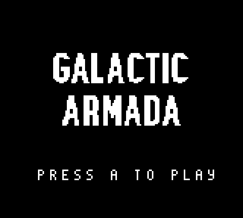

Title Screen
The title screen shows a basic title image using the background and draws text asking the player to press A. Once the user presses A, it will go to the story screen.
Our title screen has 3 pieces of data:
- The “Press A to play” text
- The title screen tile data
- The title screen tilemap
INCLUDE "src/main/utils/hardware.inc"
INCLUDE "src/main/utils/macros/text-macros.inc"
SECTION "TitleScreenState", ROM0
wPressPlayText:: db "press a to play", 255
titleScreenTileData: INCBIN "src/generated/backgrounds/title-screen.2bpp"
titleScreenTileDataEnd:
titleScreenTileMap: INCBIN "src/generated/backgrounds/title-screen.tilemap"
titleScreenTileMapEnd:
Initiating the Title Screen
In our title screen’s “InitTitleScreen” function, we’ll do the following:
- draw the title screen graphic
- draw our “Press A to play”
- turn on the LCD.
Here is what our “InitTitleScreenState” function looks like
InitTitleScreenState::
call DrawTitleScreen
;;;;;;;;;;;;;;;;;;;;;;;;;;;;;;;;;;;;;;;;;;;;;;;;;;;;;;;;;;;;;;;;;;;;;;;;;;;;;;;;;;;;;;;;;
; Draw the press play text
;;;;;;;;;;;;;;;;;;;;;;;;;;;;;;;;;;;;;;;;;;;;;;;;;;;;;;;;;;;;;;;;;;;;;;;;;;;;;;;;;;;;;;;;;
; Call Our function that draws text onto background/window tiles
ld de, $99C3
ld hl, wPressPlayText
call DrawTextTilesLoop
;;;;;;;;;;;;;;;;;;;;;;;;;;;;;;;;;;;;;;;;;;;;;;;;;;;;;;;;;;;;;;;;;;;;;;;;;;;;;;;;;;;;;;;;;
;;;;;;;;;;;;;;;;;;;;;;;;;;;;;;;;;;;;;;;;;;;;;;;;;;;;;;;;;;;;;;;;;;;;;;;;;;;;;;;;;;;;;;;;;
;;;;;;;;;;;;;;;;;;;;;;;;;;;;;;;;;;;;;;;;;;;;;;;;;;;;;;;;;;;;;;;;;;;;;;;;;;;;;;;;;;;;;;;;;
; Turn the LCD on
ld a, LCDCF_ON | LCDCF_BGON|LCDCF_OBJON | LCDCF_OBJ16
ld [rLCDC], a
ret
In order to draw text in our game, we’ve created a function called “DrawTextTilesLoop”. We’ll pass this function which tile to start on in de, and the address of our text in hl.
DrawTextTilesLoop::
; Check for the end of string character 255
ld a, [hl]
cp 255
ret z
; Write the current character (in hl) to the address
; on the tilemap (in de)
ld a, [hl]
ld [de], a
inc hl
inc de
; move to the next character and next background tile
jp DrawTextTilesLoop
The “DrawTitleScreen” function puts the tiles for our title screen graphic in VRAM, and draws its tilemap to the background:
NOTE: Because of the text font, we’ll add an offset of 52 to our tilemap tiles. We’ve created a function that adds the 52 offset, since we’ll need to do so more than once.
DrawTitleScreen::
; Copy the tile data
ld de, titleScreenTileData ; de contains the address where data will be copied from;
ld hl, $9340 ; hl contains the address where data will be copied to;
ld bc, titleScreenTileDataEnd - titleScreenTileData ; bc contains how many bytes we have to copy.
call CopyDEintoMemoryAtHL
; Copy the tilemap
ld de, titleScreenTileMap
ld hl, $9800
ld bc, titleScreenTileMapEnd - titleScreenTileMap
jp CopyDEintoMemoryAtHL_With52Offset
The “CopyDEintoMemoryAtHL” and “CopyDEintoMemoryAtHL_With52Offset” functions are defined in “src/main/utils/memory-utils.asm”:
SECTION "MemoryUtilsSection", ROM0
CopyDEintoMemoryAtHL::
ld a, [de]
ld [hli], a
inc de
dec bc
ld a, b
or c
jp nz, CopyDEintoMemoryAtHL ; Jump to CopyTiles if the last operation had a non zero result.
ret
CopyDEintoMemoryAtHL_With52Offset::
ld a, [de]
add a, 52
ld [hli], a
inc de
dec bc
ld a, b
or c
jp nz, CopyDEintoMemoryAtHL_With52Offset ; Jump to COpyTiles, if the z flag is not set. (the last operation had a non zero result)
ret
Updating the Title Screen
The title screen’s update logic is the simplest of the 3. All we are going to do is wait until the A button is pressed. Afterwards, we’ll go to the story screen game state.
UpdateTitleScreenState::
;;;;;;;;;;;;;;;;;;;;;;;;;;;;;;;;;;;;;;;;;;;;;;;;;;;;;;;;;;;;;;;;;;;;;;;;;;;;;;;;;;;;;;;;;
; Wait for A
;;;;;;;;;;;;;;;;;;;;;;;;;;;;;;;;;;;;;;;;;;;;;;;;;;;;;;;;;;;;;;;;;;;;;;;;;;;;;;;;;;;;;;;;;
; Save the passed value into the variable: mWaitKey
; The WaitForKeyFunction always checks against this vriable
ld a, PADF_A
ld [mWaitKey], a
call WaitForKeyFunction
;;;;;;;;;;;;;;;;;;;;;;;;;;;;;;;;;;;;;;;;;;;;;;;;;;;;;;;;;;;;;;;;;;;;;;;;;;;;;;;;;;;;;;;;;
;;;;;;;;;;;;;;;;;;;;;;;;;;;;;;;;;;;;;;;;;;;;;;;;;;;;;;;;;;;;;;;;;;;;;;;;;;;;;;;;;;;;;;;;;
ld a, 1
ld [wGameState],a
jp NextGameState
Our “WaitForKeyFunction” is defined in “src/main/utils/input-utils.asm”. We’ll poll for input and infinitely loop until the specified button is pressed down.
SECTION "InputUtilsVariables", WRAM0
mWaitKey:: db
SECTION "InputUtils", ROM0
WaitForKeyFunction::
; Save our original value
push bc
WaitForKeyFunction_Loop:
; save the keys last frame
ld a, [wCurKeys]
ld [wLastKeys], a
; This is in input.asm
; It's straight from: https://gbdev.io/gb-asm-tutorial/part2/input.html
; In their words (paraphrased): reading player input for gameboy is NOT a trivial task
; So it's best to use some tested code
call Input
ld a, [mWaitKey]
ld b, a
ld a, [wCurKeys]
and a, b
jp WaitForKeyFunction_NotPressed
ld a, [wLastKeys]
and b
jp nz, WaitForKeyFunction_NotPressed
; restore our original value
pop bc
ret
WaitForKeyFunction_NotPressed:
;;;;;;;;;;;;;;;;;;;;;;;;;;;;;;;;;;;;;;;;;;;;;;;;;;;;;;;;;;;;;;;;;;;;;;;;;;;;;;;;;
; Wait a small amount of time
; Save our count in this variable
ld a, 1
ld [wVBlankCount], a
; Call our function that performs the code
call WaitForVBlankFunction
;;;;;;;;;;;;;;;;;;;;;;;;;;;;;;;;;;;;;;;;;;;;;;;;;;;;;;;;;;;;;;;;;;;;;;;;;;;;;;;;;
jp WaitForKeyFunction_Loop
That’s it for our title screen. Next up is our story screen.